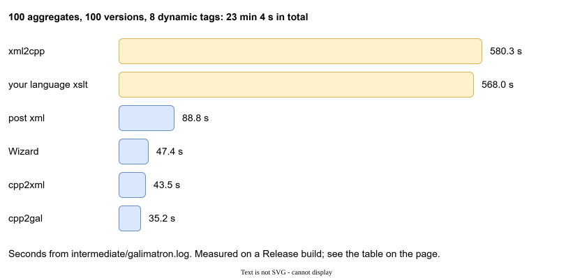

Benchmark¶
examples/benchmark is a synthetic project that answers one question: how big can a project get? It builds a description of many aggregates and many versions, runs the Wizard and an XSLT over it, and measures every step.
How big is a real project?¶
Read the numbers below against two facts about real projects.
- Many aggregates are normal. A description with 500 aggregates (one for each message, record or data type) is an ordinary size, so the benchmark goes up to 500.
- Many live versions are not. Having 100 versions in use at the same time is extremely rare. A typical project keeps about 5, maybe 10. The benchmark goes to 100 to find the limit, not because a project needs it.
Versions are the expensive part (see "How it grows" below), and that is a reason to retire them. When a version goes out of service, run a collapse: the old versions fold into one, and the time and the memory fall back. A project that keeps its live versions to a handful stays in the cheap corner of every table on this page.
The case to look at first: 500 aggregates, 10 versions
This is the size most projects will actually have, so read its numbers before the rest. Here are the rows of the static tags and no XSLT tables for it:
| 500 aggregates, 10 versions | with your language XSLT | without any XSLT |
|---|---|---|
| 1 tag in each aggregate | 76.6 s, 444 MB | 44.5 s, 185 MB |
| 100 tags in each aggregate | 9 min 45 s, 2.9 GB | 2 min 37 s, 1.1 GB |
The Wizard stays near 22 seconds in all of these rows. What grows with the tags is your XSLT and the reading of its result back: with 100 tags they are about two thirds of the run.
What it does¶

One run has a source of A aggregates (the root file, console.gal, and one file for each aggregate), each with version 0 only. Version 0 has a bit of everything: a dynamic label, a static label with tag-name-from, an important tag, a dynamic tag, a long string, an unnamed tag, a template, and the payload tags.
Then the run:
- The Wizard batch in
console.galcreates versions 1 toV-1. Each new version rewrites the ordering of the root, deletes and creates one tag in every aggregate, and adds a new tag.create hash 0closes version 0. xslt/suffix.xslappends the version index to every tag string. It writes the result tointermediate/suffix-fresh.xml.- The seal keeps the hashed version 0 text and moves those string changes into version 1.
- Galimatron compiles everything and writes the post XML.
This exercises every part of the language and the run: Wizard, XSLT, seal, compilation. You can read the result in actual_gal/ and the time of each step in intermediate/galimatron.log.
The machine: Intel Core i7-3770K at 3.5 GHz (4 cores, 8 threads), 32 GB of RAM, MSVC 19.51, x64, Release build with /O2. The times are in seconds. State is how much the private memory of the process grew during the run.
Dynamic tags¶
The tag types matter. A tag with a dynamic label is copied into every new version, so T dynamic tags and V versions make T * V copies. The table is the measured run; tags is the number of dynamic payload tags.
| aggregates | versions | tags | total | Wizard | cpp2xml | xslt | xml2cpp | cpp2gal | post xml | state |
|---|---|---|---|---|---|---|---|---|---|---|
| 50 | 10 | 2 | 6.9 | 0.2 | 1.0 | 1.2 | 1.4 | 1.0 | 1.0 | 152 MB |
| 50 | 10 | 8 | 14.1 | 0.2 | 2.0 | 3.4 | 3.6 | 2.0 | 1.6 | 201 MB |
| 50 | 50 | 2 | 50.4 | 3.5 | 4.9 | 11.3 | 12.9 | 4.2 | 11.1 | 447 MB |
| 50 | 50 | 8 | 128.5 | 3.5 | 10.0 | 42.7 | 45.7 | 9.1 | 13.8 | 799 MB |
| 50 | 100 | 2 | 151.8 | 11.2 | 10.2 | 36.9 | 41.2 | 8.3 | 37.5 | 1.1 GB |
| 50 | 100 | 8 | 419.4 | 12.9 | 22.5 | 152.8 | 160.4 | 18.3 | 43.3 | 1.6 GB |
| 100 | 10 | 2 | 14.8 | 0.8 | 1.9 | 3.0 | 3.5 | 1.9 | 2.1 | 262 MB |
| 100 | 10 | 8 | 32.7 | 0.8 | 3.8 | 8.9 | 10.0 | 4.0 | 3.1 | 277 MB |
| 100 | 50 | 2 | 134.1 | 12.3 | 9.5 | 37.0 | 39.9 | 8.5 | 21.5 | 808 MB |
| 100 | 50 | 8 | 393.3 | 12.6 | 20.3 | 150.9 | 157.1 | 17.6 | 27.1 | 1.3 GB |
| 100 | 100 | 2 | 436.4 | 45.0 | 20.2 | 130.6 | 137.6 | 16.2 | 73.4 | 2.1 GB |
| 100 | 100 | 8 | 1383.9 | 47.4 | 43.5 | 568.0 | 580.3 | 35.2 | 88.8 | 2.9 GB |
The biggest run has 100 aggregates, 100 versions and 8 dynamic tags. It takes 23 minutes 4 seconds and grows the state by 2.9 GB. Nearly all of it is the two steps that walk the data with your XSLT: xslt (568 s, your language XSLT) and xml2cpp (580 s, reading its result back).
How it grows¶
A is the number of aggregates, V the number of versions, T the number of tags.
- Versions dominate, about
O(V^1.5). Ten times the versions (10 to 100) makes the run 22 to 42 times longer. The copied dynamic tags and the XSLT walk grow with every version. - Tags are about
O(T^0.5)on a 10-version run. Four times the tags (2 to 8) doubles the time. With 100 versions it triples it, towardO(T). - Aggregates are about
O(A)toO(A^1.5). Twice the aggregates makes the run 2 to 3 times longer. - State follows the versions, about
O(V). At 10 versions, 100 aggregates stay near 260 MB for both tag counts.
Static tags¶
The same project with tags that have a static label. A new version does not copy them. V is fixed at 10.
| aggregates | tags | total | Wizard | xslt | xml2cpp | state |
|---|---|---|---|---|---|---|
| 10 | 1 | 0.8 | 0.0 | 0.1 | 0.1 | 73 MB |
| 10 | 100 | 4.9 | 0.0 | 0.5 | 0.6 | 135 MB |
| 50 | 1 | 3.9 | 0.2 | 0.5 | 0.6 | 115 MB |
| 50 | 100 | 26.2 | 0.2 | 3.7 | 4.4 | 431 MB |
| 500 | 1 | 76.6 | 22.0 | 11.2 | 13.6 | 444 MB |
| 500 | 50 | 271.0 | 24.0 | 70.9 | 75.1 | 1.6 GB |
| 500 | 100 | 584.9 | 21.3 | 187.1 | 195.5 | 2.9 GB |
500 aggregates, 10 versions and 100 static tags takes 9 min 45 s. Time is about O(A * T^0.5): from 1 tag to 100 tags the run grows 6 to 8 times, and fifty times the aggregates (10 to 500) makes a 1-tag run about 96 times longer. At 500 aggregates the Wizard stays near 22 seconds, whatever the number of tags.
Without XSLT¶
Not every project needs an XSLT between the Wizard and the end. gal-static-no-xslt.cfg is the same static grid without any user XSLT. Then cpp2xml, suffix.xsl and xml2cpp are not in the run, and Saxon is not created. The log has no xslt processor line.
| aggregates | tags | total | Wizard | cpp2gal | post xml | state |
|---|---|---|---|---|---|---|
| 10 | 1 | 0.4 | 0.0 | 0.1 | 0.2 | 5 MB |
| 10 | 100 | 3.1 | 0.0 | 0.5 | 2.0 | 30 MB |
| 50 | 100 | 14.7 | 0.2 | 2.6 | 9.3 | 126 MB |
| 500 | 1 | 44.5 | 23.4 | 6.7 | 8.9 | 185 MB |
| 500 | 100 | 156.6 | 21.0 | 24.8 | 86.4 | 1.1 GB |
The big case (500 aggregates, 100 static tags) drops from 9 min 45 s to 2 min 37 s, and from 2.9 GB to 1.1 GB. The slow step is now post xml (86 s), the compiled XML.
What it means for your project¶
| If | Then |
|---|---|
| The project has 10 to 50 aggregates and 10 versions. | A run is a few seconds. Do not worry. |
| The project has many versions (more than the usual 5 to 10 in use). | Time and memory follow the number of versions. Collapse old ones when they go out of service. |
| You have many tags that change every version. | Each dynamic tag is copied into every version. Use a static label for what does not need to change in each version. |
| A tag must be new in every version (an id). | Keep it dynamic, but keep the number of such tags small. |
| You use a language XSLT. | It is the largest cost on a big project: the step and the read back. Do in the post XSLT what does not have to change the data. |
| You have no data changes to make. | List no language XSLT. Saxon is not even created for a run with no XSLT at all. |
| The Wizard is slow. | It is O(1) in tags and grows with aggregates. 500 aggregates cost about 22 s. |
The time of each step is always in intermediate/galimatron.log: use the same lines to measure your own project. See Logs and diagnostics.
Run it yourself¶
The benchmark is a set of CMake targets in examples/benchmark:
| Target | Runs |
|---|---|
benchmark |
one run (500 aggregates, 10 versions, 2 dynamic tags) |
benchmark_matrix |
the dynamic grid |
benchmark_matrix_static |
the static grid |
benchmark_matrix_static_no_xslt |
the static grid without XSLT |
The results are saved in examples/benchmark/matrix/. A Release build is needed for numbers like the ones above.